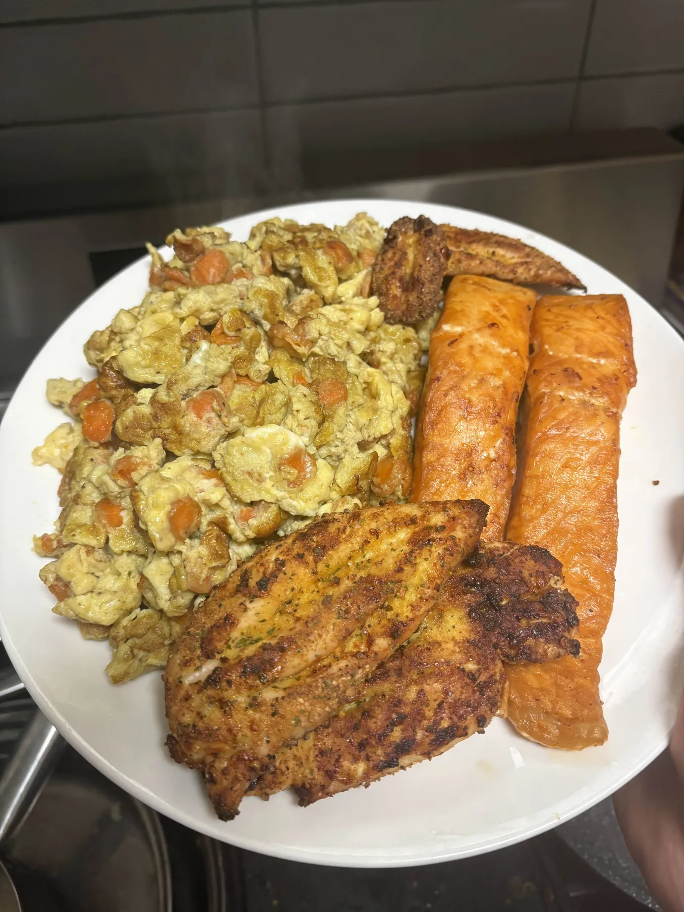

My Odin Recipe: Chicken, Salmon, 'n Eggs!

The Following Ingredients:
- 6 Chicken Eggs
- 70-150g of Baby Carrots
- 150-200g of Chicken Breast
- 280-305g of Salmon
- 42g of Ghee/Butter
- Lemon Garlic Butter Seasoning
side note: one must have an air fryer to cook both the salmon and chicken breast alike. One must utilize their skillet to cook the baby carrots and eggs.
Pre-Cooking Preparations:
- Bring out the aforesaid ingredients and place them upon the counter
- Measure the baby carrots with a food weight measurer, measure to 70-150g, and afterwards slice all the baby carrots into thin slices. Place them in a cup and set them aside for further instructions.
- Crack open the 6 chicken eggs into a cup and whisk it around with a utensil of your choosing. Sprinkle whatever amount of the seasoning ontop of the eggs and then whisk it once more, so the seasoning is mixed into the eggs well.
- Place the chicken breast upon the cutting board, slice open shallow cuts into the chicken breast upon each side, then sprinkle whichever amount of seasoning you so desire until both sides of all your chicken breast has been coated. After all of the aforementioned, place your chicken breast slices into either the left or right side of the air fryer.
- Place the salmon upon either the right or left side of the air fryer. No need to season it.
Cooking Preparations:
- Turn on the air fryer; set the temperature to 400F/205C and set the timer to be in sync for 25 minutes
- Scoop up with a spoon 42g of butter/ghee (utilize a food scale to be accurate) and place it upon the skillet. Keep the heat between high-medium heat.
- Once the ghee/butter has began to sizzle, dump the diced carrots into the skillet pan; moving them around with your spatula (or spoon) to coat the butter/ghee evenly across. Cover with the lid and let the carrots cook for 5 minutes or until they become soft, rather than chewy.
- After the carrots have been cooked, pour all of the eggs into the skillet and then place the lid back on. 2 minutes with the lid on, 1 minute with the lid off; do this on repeat for 12 minutes. Keep the heat at the beginning at high-medium to just medium by the near end.
- When the eggs are cooking while the lid is off, whisk them around as to give them the a good scrambled shape. Cook until they are slightly browned.
- While the chikean creast and salmon alike are cooking in the air fryer, let them both cook for 12 minutes upon their top side, then flip to the bottom side and let them both cook for 10 minutes, then flip again and cook them both for 3 minutes until both meats are cooked.
- Bring out all cooked items and begin to plate your scrambled eggs first, your salmon second, and your chicken breast thirdly.
Voilà! You have now finished cooking your own dish of Chicken, Salmon, 'n Eggs! Now, go forth and enjoy it to your heart's content.